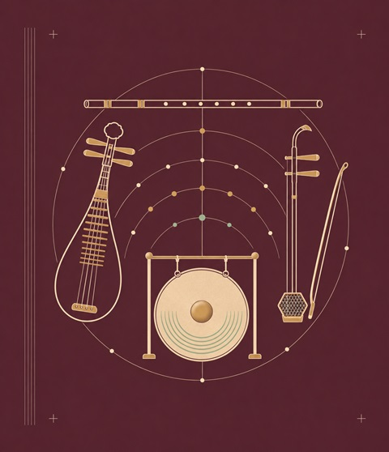

全部教材
设置
主题配色
纸白
米浆
雾蓝
淡紫
烟粉
薄荷
琥珀
石墨
午夜蓝

中国民族器乐配器教程
从笛、胡琴与琵琶的奏法入手，读懂丝竹、吹打和锣鼓的声部关系，再学习为现代民族管弦乐队安排旋律、音色与力度。
从绪论开始
→
本书程序谱
→
绪论
导读
民族乐器与乐队的形成
上篇 · 乐器法
第一章
吹管乐器
第二章
拉弦乐类
第三章
弹拨乐类
下篇 · 配器法
第四章
弦索乐类配器
第五章
丝竹乐类配器
第六章
吹打乐类配器
第七章
锣鼓乐类配器
第八章
现代民族管弦乐配器